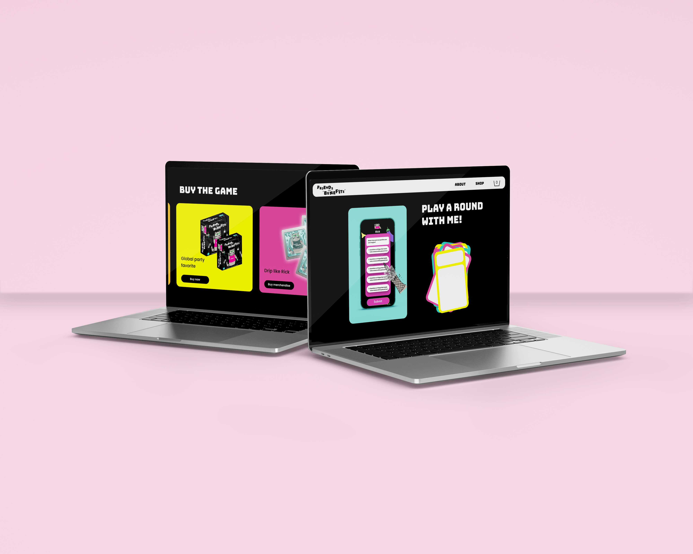
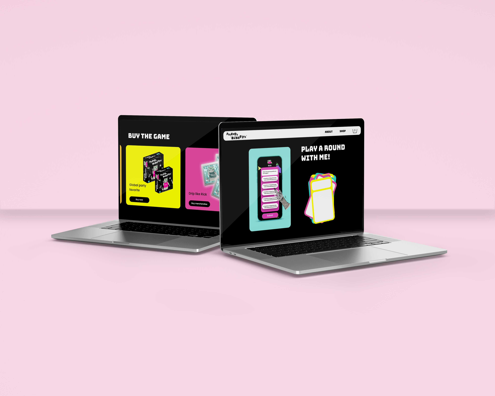

We started by conducting market research into hybrid games, individually brainstorming several initial concepts. Initially, we designed an educational elimination game inspired by "Werewolves," where players defended given news articles while identifying a hidden "troll." For quantitative data, we researched existing elimination games, and for qualitative insights, I prepared interview questions and conducted interviews with our target audience (ages 14-25). These interviews showed a preference for shorter games balancing digital and physical interaction. However, stakeholder feedback revealed a critical flaw concerning players remembering articles, prompting us to reconsider our concept.
While revisiting our research, I discovered the game "Guess, the ranking game," which sparked a new idea: players rank items digitally, and others guess the player's ranking order. Stakeholders enthusiastically supported this concept, motivating us to pursue further development. We conducted additional research on party games, prepared and executed new targeted interviews, and created a customer journey map based on our findings. We developed paper prototypes and conducted user testing within our group, resulting in valuable feedback. Based on this, we incorporated features like a pinwheel to increase excitement and adjusted the ranking system from letters to numbers for greater clarity and ease of play.
The concept of our game is as follows. This is a game for the player to get to know each other. You have cards from 3 different levels: casual, mild and spicy. Player 1 ranks the subject from their card on their own phone. There is a number on the card that the player fills in in their phone so everyone can see the question on their own screen. This is because during the paper prototyping we found out that having only a physical card is not very handy. While player one ranks their own preferences, the rest of the players try to guess player 1’s ranking. After the time is up they get to see on their screen how many they got right. According to that, they get to move up that many places on the board. This game can be played in 3 ways. We have a pinwheel witch they can turn to let it choose a level, this way you never know what will be next. The second method is that the player picks a card from the corresponding deck to the color of the tile that they landed on. Players can try to false guess so they land on a specific color, but this can backfire. And lastly player can choose to only pick card from one single deck and maybe work their way up. Because this is a party game, this can easily be turned into a drinking game. If a player doesn’t have any right guesses, they need to take a shot. We decided to call our game Friends with “Benefits”. We found this fitting because of the 17+ spicy level. This name also immediately catches people’s eyes and attention. Because as a media agency we aim to stand out and be bold, we found it very fitting.
After we finalized the concept, we divided the tasks for designing. I chose to make the game box along with the gameboard and the pinwheel. Jennifer had already made a style scape that we could work with. For the logo she used the Font “Bungee” and made the letters jumbled up. I made sure that came back somewhere in the game. I made it that each tile is a little tilted, so they are not all straight and inline. On the game cards, Saomai put icons for each level. I knew I wanted to incorporate that somewhere on the board. After I tried a couple of different things I ended up with thin borders with the icon in the middle in the color of that level. I did this because any other color like white or grey looked off. But I also did not want to make the whole tile filled with one color because then the board looks too much like a traffic light. The borders also come back on the cards and the box of the game. Here is how the board ended up looking.
Maikel gave me the feedback that a normal start to finish board might be boring. Because it is a game about getting to know each other, there might be a solution to show it in a different way. Like a scale or a star plot. When I told my group about the star plot they did not seem to like it at all. When I asked people from the target about it someone said “it’s a party game not a math exam.” So I stayed back from that. But on April 17th I went to the Fontys ICT Career day and there I saw a boardgame which caught my attention. Moral Design The Game is a discussion-based role-playing game that helps players explore ethical dilemmas involving smart digital technologies in areas like cities, education, and healthcare. The board had four areas and within those areas there are three more, ranging from agree to don’t agree. At the end this also creates a star plot without looking math related at all. In order to implement this type of board there have to be four different types of questions. We do not want to have the different levels anymore so I would have to come up with something else.
For the box I did research to existing game boxes first. I wrote down what each box needs to have like description, appropriate for what age, game duration, how many people can play, barcode, contents of the box, etc. I also looked up how big a standard game board and box are. After my research I made a rough sketch on paper first. Then I went on to designing in Adobe illustrator. For the top I only put our logo with a border that is also used on the cards and our concept poster. On one side I put the age, time and people information along with the logo. On another side I put a review to make it look legit. And on one side I put a dummy QR code which people can scan to download our app along with a catchy text about the game. On the remaining side I only put the logo again. On the bottom I placed pictures of our cards and I’ll add a snippet of the app with it. Up top there is a description of the game and on the bottom right corner I put the barcode with the contents above it. I think the whole box fits out game really well. I did not want to use too much red because that would make it look too erotic which is not what we are going for. Here is how it is looking so far.
After the first version was done and I got feedback about the design I decided to change it up. I went to a toy store and looked at all the different game boxes. Just like Maikel also told me, all the boxes have a lot of information on the front and sides. Not many games have a minimalist style. My colleague asked many people from the target audience what they prefer. Good as everyone said that they always lean more towards a fun, busy, colorful box instead of a minimalist box. I also realized that almost every game says something like “party game” or “card game” on the box itself.
After all of this feedback and research I tweaked the design a little. In order to not have a boring black box I added the icons that we also use on the cards. For now I added the icons from the levels from the first iteration. But that is going to change. We are currently working on drawing to make the questions more interesting. I also added the same pattern on the sides of the bottom box. I got the inspiration for that from the game ”Shit Happens”. That game has text along the sides so went off of that. I also changed the review section. In de first iteration it apparently looked more like a warning because of the thick red border. I changed it to a thinner border with the same corner styling used throughout the design. I also added stars and a name to really show that it is a review.
While we did the paper prototype testing we decided to use a random number picker on our laptop, this made it a lot more fun to play because that way we couldn’t know which category we had to rank from. So I also designed a simple pinwheel because these kinds of stuff are always for fun when it is physical rather than digital. This was really easy to make. I made a circle and made a pie of 30°. Then I just kept multiplying and rotating this. I filled it with the colors of our cards and added the icons again.
I made mockups of the box and board so we could add it to our poster. I did this using the perspective tool in Adobe Photoshop. This was really easy to do. I only added some shadows later on and it was finished. This is our final poster. As you can see the box and board are in the center of attention. Everyone’s designs are incorporated in this poster. When the QR code is scanned, you get sent to our landing page when the research is shown
After doing some tests with the target audience we found out that they do prefer bright and playful designs instead of simple minimalistic. Our groupmate Jennifer made a new design. We did AB tests at a party setting to get the best data. From this test we concluded that they do indeed like the bright colours more. We went off of that. She had made a racoon mascot. I suggested including the mascot more. So we gave it a name, 'Rick the Racoon' and a big personality.
We made a product website for the game. In this website people can see general information, but they can also buy products. I decided to make the home page. In this home page there is a section for questions. I did this in a very playful way. The important questions are answered seriously, but I also added some jokes. This way it keeps the customers engaged and exited. We want to sell more than just the game for marketing purposes. That is why we created some merchandise. I suggested making shot glasses, a grinder and condoms. All of these products fit really well with our game and marketing strategy.
For the web design we took inspiration from the cards against humanity website. The main reason for this website was to prove our development learning outcome. That is why we did not focus too much on the design. After I made the homepage, I did a usability test with a few people. Everyone found the whole page very funny. The only feedback I got was on the download section. The icons were too big and unnecessary so I immediately changed that. The first sections where people can play a demo was also not very clear yet, but that is because I couldn’t make the game playable in Figma. When I explained it, everyone understood and liked the idea.
 
